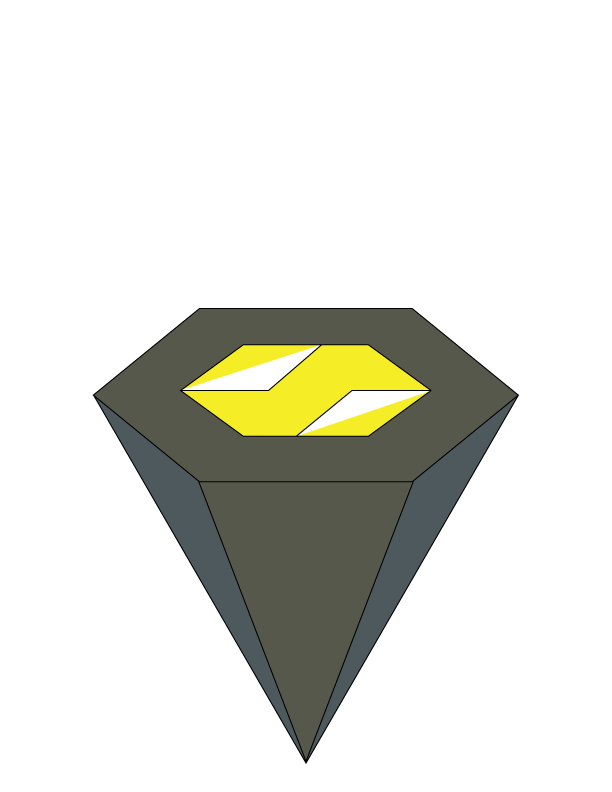

I created a logo out of the name Templar s initials using Adobe Illustrator. I used the pen tool to edit and adjust color, the rectangle tool to create the logo's boxes, and the polygon tool to create the triangles. The colors I selected were yellow, black, and green for one of the logos.

The first one has the s behind the t and is shaped like a hexagon.
The second logo is a diamond-shaped one with a gray portion for the t and a yellow one for the s.
The third logo consists of boxes that form a yellow and black s and t.
The t and s are the fourth log; the t has two pieces, is on top of the s and is green and yellow, while the s is on the bottom and is black, giving the logo the appearance of a hut.

The final logo utilizes the polygon tool to make a triangle by positioning the s in front of the t. It is triangular in shape, yellow and black, and incorporates these colors.
In the creation of the name Templar s' initials were used in Adobe Illustrator to create a logo that is straightforward and pleasing to the eye. To make my logo more aesthetically pleasing when viewed, I utilized the colors white, green, red, blue, purple, and yellow and for the colors to pop a black background was used. I formed the t and s using the rectangle tool, making sure to keep them as even as possible.

This is the first page of the pamphlet which shows on of my first logos that is yellow, black and white which connects to the entire brochure


For the Brochure I used Kozuka Gothic Pr6N, Berlin Sans FB Demi for the fonts as it shows a more simple design.
Shows pictures of printing and pictures of a product and uses Black yellow white green also putting word around the products to show a description and to show a modern aesthetic.


The sixth and seventh page of this pamphlet shows how the product could be used, like applying the product on things and other surfaces.
This shows how the printing service helps a company or product display a design or message